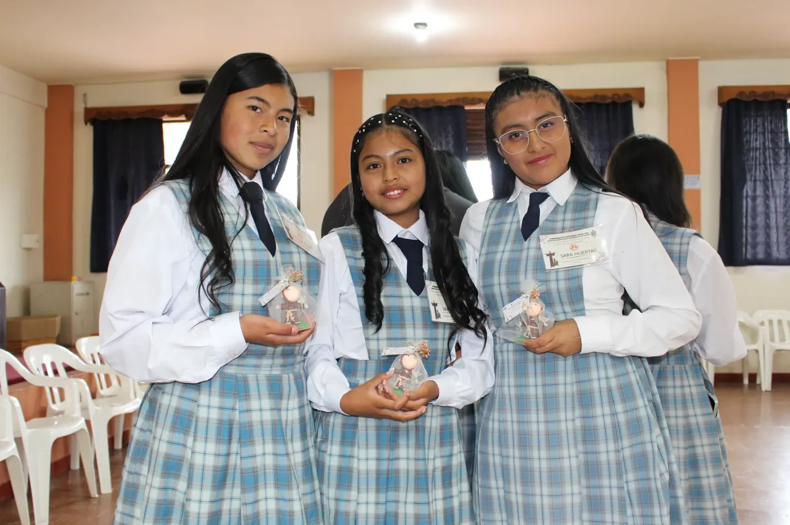

Formación espiritual y humana inspirada en la espiritualidad franciscana
El Área de Pastoral de la Institución Educativa Municipal María Goretti orienta su acción formativa desde la espiritualidad franciscana, promoviendo el desarrollo integral de la comunidad educativa mediante experiencias de fe, formación humana y compromiso social.
Durante el año 2026, la Pastoral continúa consolidándose como eje transversal de la vida institucional, acompañando a estudiantes, familias, docentes y personal administrativo en su crecimiento espiritual, emocional y comunitario.

El Área de Pastoral de la Institución Educativa María Goretti tiene como misión acompañar integralmente a la comunidad educativa, promoviendo procesos de formación humana y espiritual inspirados en el Evangelio y en la espiritualidad franciscana, que permitan fortalecer los valores institucionales, la sana convivencia y el compromiso con la construcción de una sociedad más justa, fraterna y solidaria.
Para el año 2026, el Área de Pastoral busca consolidarse como un espacio dinamizador de la vida institucional, reconocido por su acompañamiento cercano, sus procesos formativos significativos y su capacidad de integrar la fe, la vida y la educación, formando personas con sentido humano, espíritu crítico y compromiso cristiano.
Las líneas de acción pastoral se centran en el acompañamiento y formación integral de estudiantes y familias, promoviendo el desarrollo socioemocional y la sana convivencia. Se fortalecen la vida de fe y la espiritualidad mediante celebraciones litúrgicas y espacios de oración, así como la formación de las familias a través de la Escuela de Padres. Además, se impulsa la proyección social y la solidaridad, la animación institucional con sentido pastoral y la vida sacramental, favoreciendo una vivencia auténtica de la fe y el compromiso cristiano.